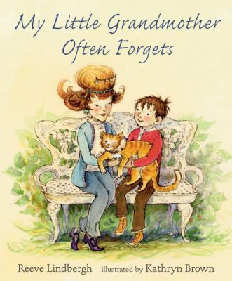

My little grandmother often forgets
By Reeve Lindbergh and Kathryn Brown
My little grandmother
can't find a thing.
She can't find her glasses;
she can't find her ring.
She can't find her teacup;
she can't find her shoes.
She can't find her cat
and that cat's hard to lose!
Sometimes Tom's grandmother forgets the way home from the market, or that Tom's name is Tom and not Roy. But Tom doesn't mind. He loves to help his grandmother and just spend time with her. The special bond between a beloved grandmother affected by memory loss and her devoted grandson is described in Reeve Lindbergh's most personal book for children, one that is based on her own and her son's relationship with her mother in the last years of her life. Kathryn Brown's watercolor illustrations tenderly capture the unique characters - and the love that is universal.
Age Range: 4 - 6 years
Find out more:
here
Watch a video: here